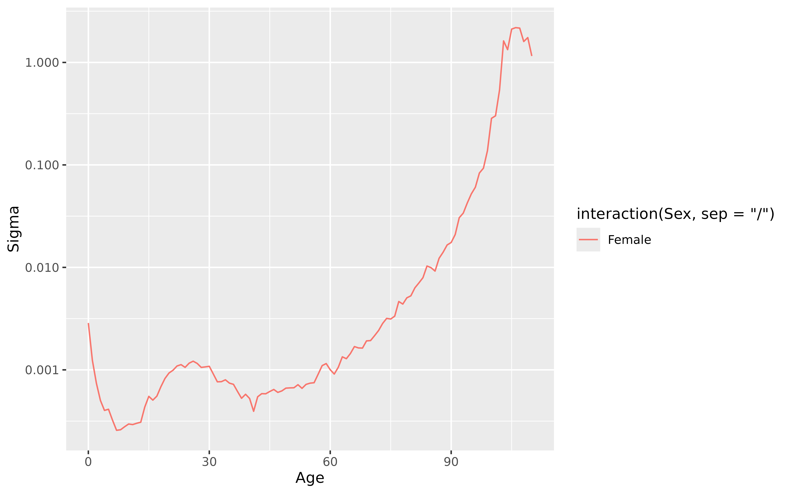

FNAIVE() returns an random walk functional model applied to the formula's response variable as a function of age.
Examples
fnaive <- aus_mortality |>
dplyr::filter(State == "Victoria", Sex == "female") |>
model(fit = FNAIVE(Mortality))
report(fnaive)
#> Series: Mortality
#> Model: FNAIVE
#>
#> # A tibble: 101 × 2
#> Age sigma
#> <int> <dbl>
#> 1 0 0.00658
#> 2 1 0.00194
#> 3 2 0.000656
#> 4 3 0.000432
#> 5 4 0.000477
#> 6 5 0.000437
#> 7 6 0.000414
#> 8 7 0.000356
#> 9 8 0.000330
#> 10 9 0.000307
#> # ℹ 91 more rows
autoplot(fnaive) + ggplot2::scale_y_log10()
